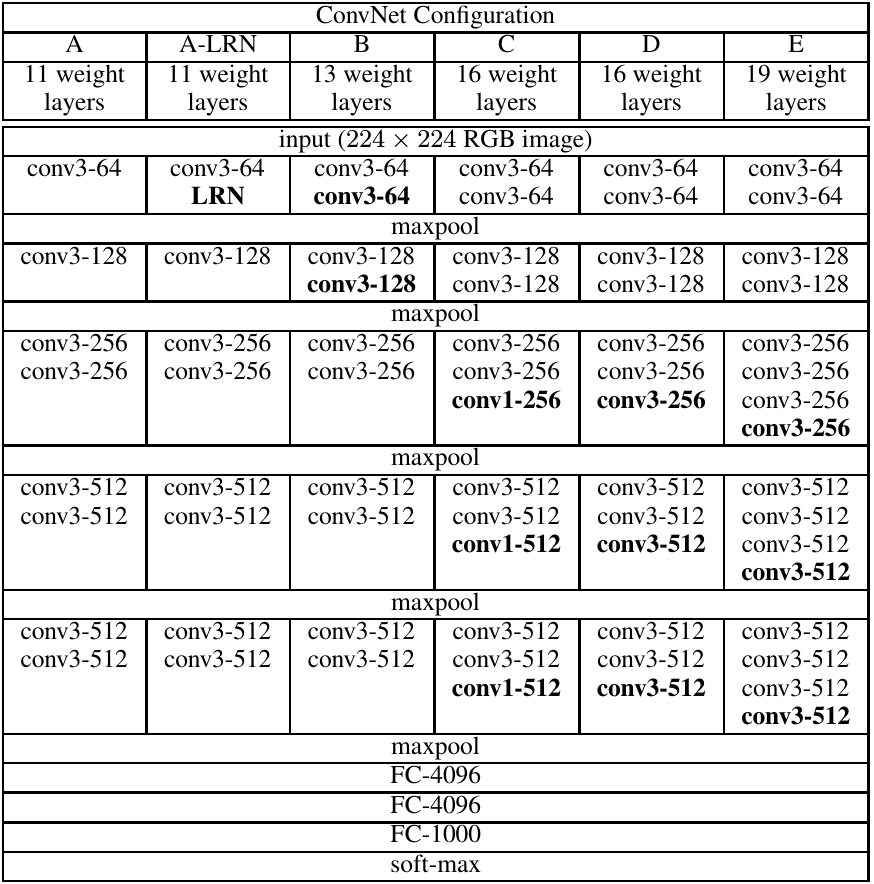
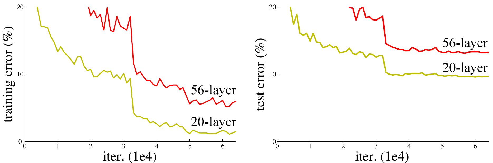

Deep Learning, Vision, and Others
Created by Lijun Wang
What is Deep Networks?
What is neural networks (CNNs, RNNs, SAE, DBN)?
How to distinguish deep and shallow models?
Are they deep or shallow models: SVMs, three-layer CNNs, 20-layer CNNs?
The Universal Appriximator Theorem [1]
A neural network with at least one hidden layer can represent any function to an arbitary degree of accuracy so long as its hidden layer is permitted to have enough units.[1] Hornik, Kurt, Stinchcombe, Maxwell, and White, Halbert. Multilayer feedforward networks are universal approximators. Neural Networks, 1989
So What?
- Shallow models: overfitting, reducing model complexity, adding regularization.
- Deep models: underfitting, increasing model complexity, optimization, computation resource

Overview
Image Classification
Object Detection
Dense Prediction
Sequance Modeling
Image Classification
Alex Net
VGG Net
GoogLe Net
Deep Residual Net
Alex Net (2012, Top5: 16.4%)
5 Conv + 3 fully connected


New Technologies (Tricks)
- ReLU non-linear units
- Dropout
- Local response normalization
- Data augmentation
- 1.2 million training + 50k validation
- GPU training
VGG Net (2014, Top5: 7.32%) 
New Knowledge (Feature)
- Increasing depth with small (3x3) convolution filters.
- A stack of two 3x3 conv layers has an effecitve receptive field of 5x5,
- but incorparates one additional non-linear layers,
- and reduces parameters
- Preserve time complextiy per layer.
- Layers with same output feature map size have the same number of filters.
- If the feature map size is halved, the number of filters is doubled.
GoogLeNet (2014, Top5: 6.67%)
Architecture Designs
-
Global average pooling[2] before fully connected layers.
-
Multiple loss layers to enforce gradient back-propagation and encourage discrimination in lower layers.
-
Inceptions
[2] Min Lin el al. Network in network. CoRR, abs/1312.4400, 2013.
Inception
- Increasing feature map channels without blowing-up computational complexity.
- Processing signals at different scales and aggregating for abstraction.

Deep Resedual Network (2015, Top5: 3.57% human-level: 5.1%)
Degradation problem: with network depth increasing, accuracy gets asturated and then degrades.
Residual Learning
Fit a residual mapping $\mathcal{F}(\mathbf{x}):=\mathcal{H}(\mathbf{x})-\mathbf{x}$, rather than fitting the original mapping $\mathcal{H}(\mathcal{x})$
- It is easier to optimize the residual mapping (Considering an identity mapping as optimal).

Network Architecture
Building Blocks
Identity mapping by short connect.

Naive v.s. Bottleneck
Deep Residual Net Address Degradation

Object Detection
R-CNN
Fast R-CNN
Faster R-CNN
YOlO
R-CNN: Regions with CNN Features


Pros and Cons
- The first detector eploring deep CNN features with excellent performance.
- Training is a multi-stage pipeline
- Training is expensive in sapce and time
- Object detection is slow (47s/f)
Fast R-CNN
Key Features
- RoI pooling layer: extracts fixed length feature for each region proposal.
- Multitask Learning: $L(p,u,t^u,v)=L_{cls}(p,u) + \lambda L_{loc}(t^u,v)$
- Training is single-stage and update all network layers.
- No disk storage is required for feature caching.
Faster R-CNN

- Feature Net + RPN + Fast R-CNN
- Share deep features between object proposal and detection.
Region Proposal Net (RPN)
- Slide a 3x3 filter on the convolution feature map to obtain a feature vector.
- Two sibling layers: box regression (reg) and classificaion (cls)
- For each window center, reg outputs 4k coordinates, cls outputs 2k class score with respect to k anchors.
Training RPN, Fast R-CNN, and Feature Net
- Alternating training.
- Approximate joint training.
- Non-approximate joint training.
YOLO: You Only Look Once
- Divie image into a 7x7 grid, each grid cell is responsible to detect the object within the grid.
- Each cell predicts 2 bounding box and 20 class probabilities
- Each bounding box includes 5 predictions: 4 relative coordinates and 1 object confidence.
- Totally 7x7(2x5+20)=7x7x30 output unites.

Detector Design
- First 20 layers are pretrained on image classification.
- Increase input resolution from 224x224 to 448x448.
- In finetuning, each object only update 1 responsive predictior among 7x7x2 predictors.

Performance Comparison
Dense Prediction
- to be continued ...
How people viewed networks 20 years ago
"In spite of the seemly different underlying principles, most of the well known neural network models are implicitly equivalent or similar to classical statistical pattern recognition methods" Jain TPAMI 2000.
"Neural networks are statistics for amateurs… Most neural networks conceal the statistics from the user" Anderson, 1990.
What's next?
- Simply using deep learning for vision problem is not sufficient to get our papers accepted. We are entering the post-deep-learning era.
- We should follow most recent pregress of deep learning by reading more papers and build solid foundation on machine learning as well.
Dense Prediction
Structured Learning
Weakly- and Semi- Supervised Learning
Constrained Convolutional Neural Networks for Weakly Supervised Segmentation
Deepak Pathak, Philipp Krähenbühl, Trevor Darrell
UC Berkeley
Semantic Segmentation
Given image I, predict pixel labels $X=\{x_0,\ldots,x_n\}$.
CNN models the distribution by $Q(X|\theta,I)=\prod_i q_i(x_i|\theta,I)$,
where $q_i(x_i|\theta,I)=\frac{1}{Z_i}\exp(f_i(x_i;\theta,I))$
Fully and Weakly Supervised Segmentation
For fully supervised training:
For weakly supervised training:
subject to $A_i Q_i \geq b_I \quad \forall I$
Weakly Supervised Segmentation
However it is hard to directly optimize
subject to $A_I Q_I \geq b_I \quad \forall I$
Constrained Optimization
Introduce a latent probability distribution $P(X)$:
subject to $AP \geq b, \quad \sum \limits_{X} P(X)=1$,
where KL-divergence $D(p(x)\|q(x))=\sum_x p(x)\log \frac{p(x)}{q(x)}$ measures the distance of two distributions.
Constraints for Weak Segmentation
Suppresion constraint suppress any label $l$ that does not appear in the image:
Constraints for Weak Segmentation
Foreground constraint encourages foreground:
Compare with multiple instance learning (MIL) paradigm
Constraints for Weak Segmentation
Background constraint constrain background regions
Constraints for Weak Segmentation
Size constraint put an upper bound constraint on classes that are guaranteed to be small:
Experiments
VGG + Fully Connected CRF. Constrained Optimization is performed on course maps generated by VGG.
Experiments
VGG + Fully Connected CRF. Constrained Optimization is performed on course maps generated by VGG.
Weakly- and Semi-supervised Learning of DNN for Semantic Segmentaiton
| G. Papandreou | L. Chen | K. Murphy | A. Yuille |
| Google, Inc. | UCLA | Google, Inc. | UCLA |
- Pixel-level annotations
- Image-level annotations
- Bounding box annotations
Image-level Annotations
Formulate training as hard-EM approximation, with compete-data log likelihood:
$\approx \log(\hat{Y}|X;\theta)$
Image-level Annotations
E-step: update the latent segmentation
M-step: minimize $Q(\theta;\theta^{'})$ using stochastic gradient descent.
Image-level Annotations
In summary:
- Refine latend segmentation $\hat{Y}$ with current network output and image label constraint.
- Train the network with refined segmentation $\hat{Y}$ as GT